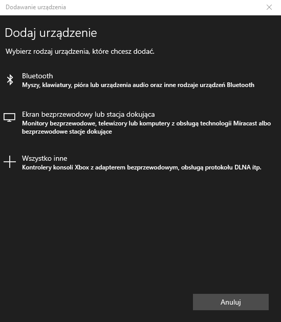

Aby po³±czyæ nowe urz±dzenie bezprzewodowe, nale¿y przej¶æ do ustawieñ (Windows + U) Tam nastêpnie trzeba wybraæ opcje Urz±dzenia

Nastêpnie aby po³±czyæ siê z nowym urz±dzeniem wybieramy opcjê “Dodaj urz±dzenie bluetooth lub inne”
Wy¶wietli nam siê okno w którym musimy wybraæ opcjê “bluetooth"

Je¿eli urz±dzenie siê nie wy¶wietla nale¿y sprawdziæ czy urz±dzenie dzia³a i czy wysy³a sygna³ bluetooth W przysz³o¶ci gdy bêdziemy w³±czaæ urz±dzenie bêdzie ono automatycznie siê parowaæ z komputerem.